UDN
Search public documentation:
MainProjectorProperties
Interested in the Unreal Engine?
Visit the Unreal Technology site.
Looking for jobs and company info?
Check out the Epic games site.
Questions about support via UDN?
Contact the UDN Staff
Main Projector Properties
Document Summary: A thorough reference to the Projector settings not necessarily relevant to the ProjectiveTexture. Document Changelog: Last update by Michiel Hendriks, minor v3323 update. Previous update by Jason Lentz (DemiurgeStudios?) for splitting up the Projectors documents into smaller more manageable docs. Original author was Lode Vandevenne (UdnStaff).Introduction
The following settings are the settings you will most commonly be using when setting up your Projector. They are by no means the only settings you will need, but for setting up the most basic properties, this is where you will want to start. For the rest of the Projector properties, see the ProjectorTextures doc.The Projector
DrawScale
In the properties of the Projector --> Display, you can change the width and height of the box with DrawScale. The length of the box is not changed with this; that is determinated by MaxTraceDistance. Since you can't change width and height independently, the projection will always be a square. So with DrawScale you change the size of the texture, but you can also do this with FOV, however if you use DrawScale you can change the size without changing the Field Of View. For example, if you want to simulate a shadow from sunlight, where the rays are parallel, and you want the make the texture bigger while the rays still stay parallel, you have to use DrawScale. On the screenshots, the first projector has a DrawScale of 0.5 and the second one 1.5. The DrawScale matches with the Scaling values you can give the BSP surfaces, so the size of the box will also change if you use a bigger or smaller Projective Texture.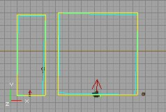
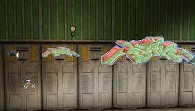
Rotation
If you rotate the Projector, the arrow points towards the direction the texture will be projected, and the blue and yellow box rotate together with the arrow. With Pitch and Yaw you can rotate the projection to the floor, the ceiling, or any of the walls. But you can also Roll the Projector, and this will rotate the Projective Texture itself around its own axis, for example here the graffiti is rotated: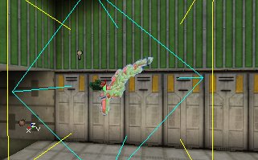
You can rotate the projector with the Rotation Tool, but you can also change these settings in its properties --> Movement --> Rotation. 360� is equal to 65536 units (2^16) in the Rotation settings.FOV
With FOV you can change the Field Of View of the blue frustrum. Don't set the FOV to 0, then the projection looks weird. For example on the screenshots, the Projector on the left has a FOV of 50 and the one on the right has a FOV of 5. With a high FOV, especially higher than 100, the result will look weird. Also, the higher the FOV, the more there will be cut away some sides of the texture. So it is better to leave a large enough transparent border around the texture so the invisible parts are removed and you can't see the difference. Note that, if the arrow of the Projector is pointing upwards, but because of the FOV the floor still touches the blue frustum, there will be no projection on the floor.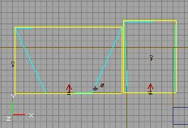
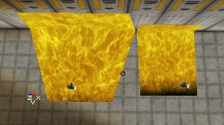
MaxTraceDistance
With MaxTraceDistance you can change the length of the box; anything behind this length will not get the projection anymore. For example, on the screenshot the left Projector has a MaxTraceDistance of 200, and this is too short to hit the wall, so it won't cast a projection on the wall. The projector on the right has a MaxTraceDistance of 400 and is long enough, so the traces hit the wall and there will be a projection on the wall.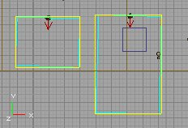
Also keep in mind that the Project can project through walls, and it will cast on any surface that is within its MaxTraceDistance and facing the Projector.bGradient
If this value is set to True, then the projected texture will become more transparent the further away from the projector is from the point of contact on a surface. This is useful for creating shadows or lights that fade out as the fall further from their source.Clipping
bClipBSP
The texture is repeated over the whole BSP surface, but if you set in the properties of the Projector bClipBSP to True. When you did this, the projected texture will be there only once, inside the blue frustum.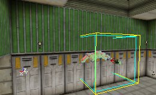
bClipBSP works on BSP surfaces only, there's also a better way to make the texture not repeating on all types of geometry, explained later in this tutorial.bClipStaticMesh
Just like bClipBSP, the texture will be repeated over the entire surface of any StaticMesh that has any polygons inside the blue frustum of the Projector.Projecting on Surfaces
bProjectActor
If this is set True, the Projector will make its projection on actors such as players and the weapons that they are holding.bProjectBSP
If you set this value to be True, the Project will project on to BSP geometry.bProjectOnAlpha & bProjectOnParallelBSP
These settings no longer have any effect.bProjectOnBackfaces
This setting controls the intensity of the projection on a surface. If left False, the projection will be more transparent on more oblique angles and more opaque on more perpendicular angles. If set to True, the entire projection will be equally bright on all angles that it projects on to.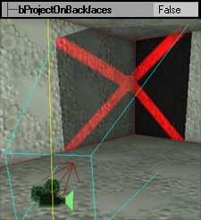
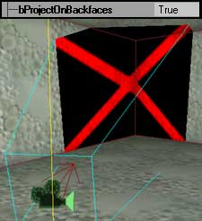
The True setting is useful for projecting shadows since they do not appear more or less dark depending on the angle of incidence of the shadow. Note: IIRC GeForce 1/2 cards will always project on backfaces in certain cases as they can't handle the stage setup required to cullbProjectOnUnlit
This setting allows you to choose if the project should or should not project on unlit surfaces. For example if you made a surface Unlit because you don't want it to receive shadows, you should set bProjectOnUnlit to False for a Projector that casts a shadow.bProjectParticles
If this is set True, the Projector will show up on particles in particle systems. This can be useful for creating effects with particle system dust or snow passing through a beam of light from a window (or perhaps a stained glass window).bProjectStaticMesh
If this is set True, the Projector will show up on StaticMeshes.bProjectTerrain
Setting this value to True will cause this projector on to terrain.Miscellaneous Settings
ProjectTag
This allows you to limit the Project to projecting onto StaticMeshes that share the same tag as the one that is entered in this field. The Projector will still render onto Actors, Terrain, BSP geometry, etc., though even if it does not have a matching Tag to the ProjectTag assigned in this field. bDynamicAttach must also be set to False for this option to work. To disable the projector on the other surfaces you must set the corresponding values to false (respectively: bProjectActor, bProjectTerrain, and bProjectBSP, etc.).bDynamicAttach
This setting only exists for the editor to call it while the game is in progress. You should not need to touch this value and it is best to leave it at its default False setting.bLevelStatic
If you set bLevelStatic to True, the actual Projector Actor will be destroyed immediately when you open the map in the game, however the projection will stay on the wall forever. This means, the projection that was created at the moment you opened the map, right before the Projector was destroyed, becomes "frozen" on the walls. If the Projector has bProjectActor = True, and a player walks in the blue box, the player will not get the projection on him, because the projector itself has disappeared. If bLevelStatic is False, the Projector will stay in the map forever, and if now players or other actors walk in the frustum, they'll get the projection on their body. For example, on the first screenshot bLevelStatic = True, and on the second screenshot bLevelStatic = False. I also set bHidden to False for the Projector, so you can see the Projector has disappeared on the first picture, but not on the second.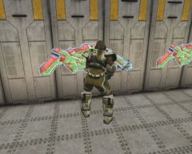
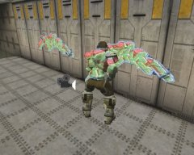
If you hold a weapon, you can also see the projection on the weapon, if bLevelStatic = False.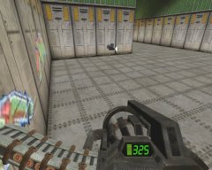
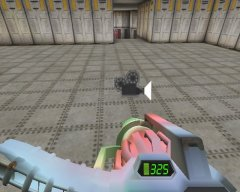
For decals such as this graffiti, you better set bLevelStatic to True, but for light and shadow effects you can set it to False, so the light or shadow will also be projected on the players.